Обзор
В этом уроке мы рассмотрим основы использования C++ для создания удобного и управляемого игрока от первого лица (FPP). Точнее, мы будем создавать «Компонент игрока», который можно будет настроить непосредственно в CRYENGINE, изменяя такие значения, как рост игрока, скорость ходьбы, скорость вращения и т. д.
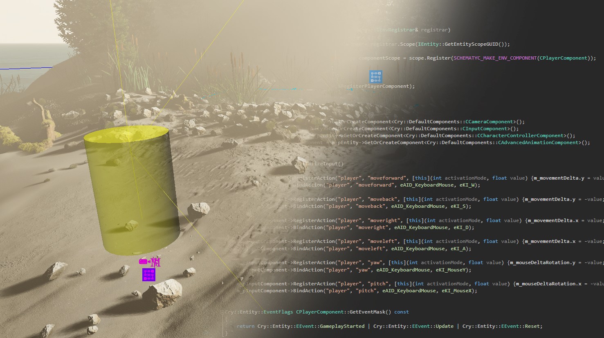
Этот «компонент игрока» будет полностью написан на C++, и хотя для анимации мы будем использовать проект шутера от первого лица или шутера от третьего лица template, мы будем сами создавать движения с нуля. Сам плеер состоит из четырех основных компонентов; Камера, ввод, физика и анимация. К тому времени, как вы закончите, ваш игровой персонаж будет иметь:
- Простая модель столкновения капсул
- Базовый WASD элементы управления
- Контроллер камеры в виде мыши
Независимо от того, знакомы вы с C++ или нет, к концу урока вы изучите ценные основы C++, а также введете в свой проект простой символ, который вы сможете изменять и повторно использовать в любом проекте.
Предварительные условия
- CRYENGINE 5,7 LTS
- Visual Studio (2017, 2019 или 2020 работают нормально) или любой другой IDE или редактор кода по вашему выбору.
Начало работы
Прежде чем добавлять к нашему игроку какое-либо движение, нам сначала нужно настроить несколько вещей; самое важное — создать игрока, в котором мы тоже можем применять движение. Этот игрок представляет собой просто комбинацию компонентов на основе C++ (камера, сетка, входные данные, скорость), которые вместе становятся основой игрового персонажа. Для начала нам нужно создать эти компоненты, узнать, где они находятся, и понять, как все это работает вместе с CRYENGINE.
Создание нового проекта
Для начала первым шагом является создание проекта. Хотя шаблоны, которые мы будем использовать, содержат элементы управления игроком, мы удалим весь код и создадим собственный игрок с настраиваемыми переменными, сохранив при этом анимацию, поставляемую с персонажем.
Начните с создания нового проекта в CRYENGINE 5.7 LTS. Для template выберите «Шутер от третьего лица» или «Шутер от первого лица» template.
Дополнительную информацию о том, как создать проект, см. Создание, импорт и обновление проектов.
Убедитесь, что вы выбрали CPP и не С# template, поскольку мы будем использовать C++.
Назовите свой проект и откройте его в CRYENGINE 5.7 LTS Sandbox. После загрузки проекта немедленно закройте редактор Sandbox. В этом уроке мы в основном будем работать вне редактора Sandbox.
Откройте панель запуска CRYENGINE и перейдите на вкладку «Проекты». Оказавшись там, нажмите кнопку

В корневом каталоге нашего проекта перейдите в CRYENGINE Проекты/<YourProjectName>/Код/Компоненты и удалить bullet.h, SpawnPoint.cpp и SpawnPoint.h - они нам не понадобятся.
Единственные файлы, оставшиеся в папке «Компоненты», должны быть Player.h и Player.cpp, где будет проходить основная часть нашей работы. Хотя мы не будем удалять эти файлы, мы изменим их содержимое позже, когда создадим наше решение.
Далее щелкните правой кнопкой мыши файл .крипроект файл, соответствующий только что созданному нами проекту, и выберите Создать решение из раскрывающегося меню.
Вариант «Создать решение»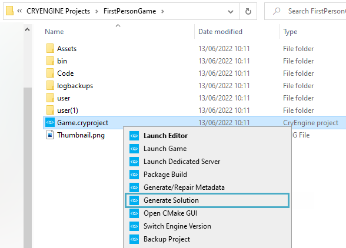
Это создаст новую папку с именем Решения в корневом каталоге вашего проекта, где будет находиться наш файл «решения» (.sln). Файл решения представляет собой базу данных всех файлов игры. .cpp и .h файлы, которые мы можем изменить.
В рамках нашего нового Решения папка - это папка с названием Win64. Он содержит довольно много файлов, но все, что вам нужно сделать, это открыть файл. Game.sln файл в предпочитаемой вами версии Visual Studio, с помощью которой мы можем напрямую изменять эти .cpp и .h-файлы.
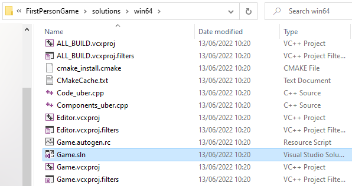
Файл Game.sln в папке win64.
В панели запуска CRYENGINE вы также можете нажать кнопку
Очистка GamePlugin.cpp и GamePlugin.h
Теперь, когда мы создали наше решение, мы должны зайти в него и удалить определенные строки кода, которые включены в шаблоны шутеров от первого/третьего лица, но которые не понадобятся, поскольку они вызывают раздувание и подлежат удалению; это делается для того, чтобы в дальнейшем не возникло конфликтов.
Теперь мы удалим ненужные строки, начиная с тех, которые в основном относятся к сети.
Однажды Game.sln открыт в Visual Studio, в обозревателе решений перейдите к Проект>Игра>GamePlugin.cpp начать. Действуйте, как указано в складном разделе ниже:
GamePlugin.cpp Сначала наверху, удалить:
#include "Components/Player.h"Эта строка используется для работы в сети, чтобы получить ссылку на игрок; нашему плееру это не нужно.Следующий, идти в раздел члена деструктора и удалите следующее:
// Remove any registered listeners before 'this' becomes invalid if (gEnv->pGameFramework != nullptr) { gEnv->pGameFramework->RemoveNetworkedClientListener(*this); }Далее удалите сеть линии под
Post Initialization, поскольку они также являются сетевыми линиями:// Listen for client connection events, in order to create the local player gEnv->pGameFramework->AddNetworkedClientListener(*this);Под
ESYSTEM_EVENT_LEVEL_UNLOAD, удалить строка:m_players.clear();Напоследок для нашего GamePlugin.cpp, В конце есть четыре функции, которые опять же можно удалить, поскольку они относятся к сети. Линии для удалить следующие:
bool CGamePlugin::OnClientConnectionReceived(int channelId, bool bIsReset) { // Connection received from a client, create a player entity and component SEntitySpawnParams spawnParams; spawnParams.pClass = gEnv->pEntitySystem->GetClassRegistry()->GetDefaultClass(); // Set a unique name for the player entity const string playerName = string().Format("Player%s%d" PRISIZE_T, m_players.size()); spawnParams.sName = playerName; // Set local player details if (m_players.empty() && !gEnv->IsDedicated()) { spawnParams.id = LOCAL_PLAYER_ENTITY_ID; spawnParams.nFlags |= ENTITY_FLAG_LOCAL_PLAYER; } // Spawn the player entity if (IEntity* pPlayerEntity = gEnv->pEntitySystem->SpawnEntity(spawnParams)) { // Set the local player entity channel id, and bind it to the network so that it can support Multiplayer contexts pPlayerEntity->GetNetEntity()->SetChannelId(channelId); // Create the player component instance CPlayerComponent* pPlayer = pPlayerEntity->GetOrCreateComponentClass<CPlayerComponent>(); if (pPlayer != nullptr) { // Push the component into our map, with the channel id as the key m_players.emplace(std::make_pair(channelId, pPlayerEntity->GetId())); } } return true; } bool CGamePlugin::OnClientReadyForGameplay(int channelId, bool bIsReset) { // Revive players when the network reports that the client is connected and ready for gameplay auto it = m_players.find(channelId); if (it != m_players.end()) { if (IEntity* pPlayerEntity = gEnv->pEntitySystem->GetEntity(it->second)) { if (CPlayerComponent* pPlayer = pPlayerEntity->GetComponent<CPlayerComponent>()) { pPlayer->OnReadyForGameplayOnServer(); } } } return true; } void CGamePlugin::OnClientDisconnected(int channelId, EDisconnectionCause cause, const char* description, bool bKeepClient) { // Client disconnected, remove the entity and from map auto it = m_players.find(channelId); if (it != m_players.end()) { gEnv->pEntitySystem->RemoveEntity(it->second); m_players.erase(it); } } void CGamePlugin::IterateOverPlayers(std::function<void(CPlayerComponent& player)> func) const { for (const std::pair<int, EntityId>& playerPair : m_players) { if (IEntity* pPlayerEntity = gEnv->pEntitySystem->GetEntity(playerPair.second)) { if (CPlayerComponent* pPlayer = pPlayerEntity->GetComponent<CPlayerComponent>()) { func(*pPlayer); } } } }
Это все, что нужно для уборки Gameplugin.cpp. Пресса Ctrl + С чтобы сохранить прогресс, и теперь загружайтесь GamePlugin.h. Действуйте, как указано в складном разделе ниже:
GamePlugin.h Как и в случае с GamePlugin.cpp, мы начнем с удаления строк, относящихся к сети. Удалить строка:
#include <CryNetwork/INetwork.h>Поскольку мы не будем получать доступ к плееру из нашего GamePlugin.cpp, удалить существующие
Player Componentстрока класса:class CPlayerComponent;Удалить строка:
, public INetworkedClientListenerПод
INetworkClientListeningесть несколько строк, которые необходимо удалено:// INetworkedClientListener // Sent to the local client on disconnect virtual void OnLocalClientDisconnected(EDisconnectionCause cause, const char* description) override {} // Sent to the server when a new client has started connecting // Return false to disallow the connection virtual bool OnClientConnectionReceived(int channelId, bool bIsReset) override; // Sent to the server when a new client has finished connecting and is ready for gameplay // Return false to disallow the connection and kick the player virtual bool OnClientReadyForGameplay(int channelId, bool bIsReset) override; // Sent to the server when a client is disconnected virtual void OnClientDisconnected(int channelId, EDisconnectionCause cause, const char* description, bool bKeepClient) override; // Sent to the server when a client is timing out (no packets for X seconds) // Return true to allow disconnection, otherwise false to keep client. virtual bool OnClientTimingOut(int channelId, EDisconnectionCause cause, const char* description) override { return true; } // ~INetworkedClientListener // Helper function to call the specified callback for every player in the game void IterateOverPlayers(std::function<void(CPlayerComponent& player)> func) const;Для GamePlugin.h, удалите карту игрока, которая является единственной строкой под
protectedкласс:// Map containing player components, key is the channel id received in OnClientConnectionReceived std::unordered_map<int, EntityId> m_players;- Наконец, нажмите Ctrl+ Сдвиг + С сохранить открытый GamePlugin.h и GamePlugin.cpp файлы.
Попытка построить это приведет к ошибке, поэтому теперь нам нужно изменить Player.cpp и Player.h.
Очистка Player.cpp и Player.h
Опять же, нам нужно удалить не только упоминания о сети, но и строки, которые мы только что удалили из GamePlugin.cpp и GamePlugin.h.
Используя обозреватель решений, откройте Player.cpp. Действуйте, как указано в складном разделе ниже:
Player.cpp Для начала мы можем удалите эти
#includeлинии вверху нашего Player.cpp:#include "Bullet.h" #include "SpawnPoint.h" #include <CryRenderer/IRenderAuxGeom.h> #include <CryNetwork/Rmi.h>Удалить все ниже и включая следующую строку:
void CPlayerComponent::Initialize():
Сохраните свой прогресс с помощью Ctrl + Сдвиг + Си открыть Player.h. Действуйте, как указано в складном разделе ниже:
Player.h Удалить строку 111 и каждая строка ниже нее, что соответствует реализации чистых методов virtual, представленных
INetworkedClientListener:void OnReadyForGameplayOnServer(); bool IsLocalClient() const { return (m_pEntity->GetFlags() & ENTITY_FLAG_LOCAL_PLAYER) != 0; } protected: void Revive(const Matrix34& transform); void UpdateMovementRequest(float frameTime); void UpdateLookDirectionRequest(float frameTime); void UpdateAnimation(float frameTime); void UpdateCamera(float frameTime); void HandleInputFlagChange(CEnumFlags<EInputFlag> flags, CEnumFlags<EActionActivationMode> activationMode, EInputFlagType type = EInputFlagType::Hold); // Called when this entity becomes the local player, to create client specific setup such as the Camera void InitializeLocalPlayer(); // Start remote method declarations protected: // Parameters to be passed to the RemoteReviveOnClient function struct RemoteReviveParams { // Called once on the server to serialize data to the other clients // Then called once on the other side to deserialize void SerializeWith(TSerialize ser) { // Serialize the position with the 'wrld' compression policy ser.Value("pos", position, 'wrld'); // Serialize the rotation with the 'ori0' compression policy ser.Value("rot", rotation, 'ori0'); } Vec3 position; Quat rotation; }; // Remote method intended to be called on all remote clients when a player spawns on the server bool RemoteReviveOnClient(RemoteReviveParams&& params, INetChannel* pNetChannel); protected: bool m_isAlive = false; Cry::DefaultComponents::CCameraComponent* m_pCameraComponent = nullptr; Cry::DefaultComponents::CCharacterControllerComponent* m_pCharacterController = nullptr; Cry::DefaultComponents::CAdvancedAnimationComponent* m_pAnimationComponent = nullptr; Cry::DefaultComponents::CInputComponent* m_pInputComponent = nullptr; Cry::Audio::DefaultComponents::CListenerComponent* m_pAudioListenerComponent = nullptr; FragmentID m_idleFragmentId; FragmentID m_walkFragmentId; TagID m_rotateTagId; CEnumFlags<EInputFlag> m_inputFlags; Vec2 m_mouseDeltaRotation; MovingAverage<Vec2, 10> m_mouseDeltaSmoothingFilter; const float m_rotationSpeed = 0.002f; int m_cameraJointId = -1; FragmentID m_activeFragmentId; Quat m_lookOrientation; //!< Should translate to head orientation in the future float m_horizontalAngularVelocity; MovingAverage<float, 10> m_averagedHorizontalAngularVelocity;Удалить следующие сетевые линии:
/ IEntityComponent virtual void Initialize() override; virtual Cry::Entity::EventFlags GetEventMask() const override; virtual void ProcessEvent(const SEntityEvent& event) override; virtual bool NetSerialize(TSerialize ser, EEntityAspects aspect, uint8 profile, int flags) override; virtual NetworkAspectType GetNetSerializeAspectMask() const override { return InputAspect; } // ~IEntityComponentНаконец, у нас есть строки для
Enumsиclass, которые также относятся к сетевым и входным флагам и могут быть удалено:enum class EInputFlagType { Hold = 0, Toggle }; enum class EInputFlag : uint8 { MoveLeft = 1 << 0, MoveRight = 1 << 1, MoveForward = 1 << 2, MoveBack = 1 << 3 }; static constexpr EEntityAspects InputAspect = eEA_GameClientD; template<typename T, size_t SAMPLES_COUNT> class MovingAverage { static_assert(SAMPLES_COUNT > 0, "SAMPLES_COUNT shall be larger than zero!"); public: MovingAverage() : m_values() , m_cursor(SAMPLES_COUNT) , m_accumulator() { } MovingAverage& Push(const T& value) { if (m_cursor == SAMPLES_COUNT) { m_values.fill(value); m_cursor = 0; m_accumulator = std::accumulate(m_values.begin(), m_values.end(), T(0)); } else { m_accumulator -= m_values[m_cursor]; m_values[m_cursor] = value; m_accumulator += m_values[m_cursor]; m_cursor = (m_cursor + 1) % SAMPLES_COUNT; } return *this; } T Get() const { return m_accumulator / T(SAMPLES_COUNT); } void Reset() { m_cursor = SAMPLES_COUNT; } private: std::array<T, SAMPLES_COUNT> m_values; size_t m_cursor; T m_accumulator; };Удалить все
#includeлинии внутри Player.h:#include <array> #include <numeric> #include <CryEntitySystem/IEntityComponent.h> #include <CryMath/Cry_Camera.h> #include <ICryMannequin.h> #include <CrySchematyc/Utils/EnumFlags.h> #include <DefaultComponents/Cameras/CameraComponent.h> #include <DefaultComponents/Physics/CharacterControllerComponent.h> #include <DefaultComponents/Geometry/AdvancedAnimationComponent.h> #include <DefaultComponents/Input/InputComponent.h> #include <DefaultComponents/Audio/ListenerComponent.h>И, наконец, удалите тот
Mouse_Delta_Thresholdлиния:#define MOUSE_DELTA_TRESHOLD 0.0001f- Пресса Ctrl + Сдвиг + С сохранить прогресс на всех вкладках и Ctrl + Сдвиг + Б построить. Вы должны получить следующую ошибку:
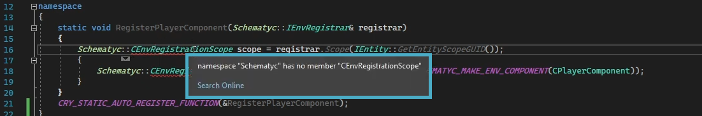
Причина этой ошибки в том, что он не распознает класс, и нам необходимо его включить. Чтобы это исправить, добавьте эту строку в свой Player.cpp:
#include <CrySchematyc/Env/IEnvRegistrar.h>
- Сохранить ваш прогресс и создайте свое решение, нажав Ctrl + Сдвиг + Б. На этот раз ошибок не должно появиться.
В этот момент GamePlugin.cpp и GamePlugin.h являются полными, и Player.cpp и Player.h также готовы к дальнейшему развитию. Теперь вы можете закрыть GamePlugin.cpp и GamePlugin.h поскольку мы больше не будем их трогать.
Создание игрока
Теперь, когда мы удалили строки, которых у нас не будет Если нам понадобится наше игровое решение, мы можем начать добавлять строки, которые будут служить базовым интерфейсом для нашего игрового персонажа — мы называем эти компоненты.
Добавление компонентов
В Player.h, мы начнем формировать наш заголовок.
Это обычная практика в заголовках иметь public раздел вверху для ваших общедоступных участников, а protected раздел ниже для ваших унаследованных участникови private последний раздел для переменных-членов или функций, к которым вы не хотите, чтобы что-либо еще имело доступ.
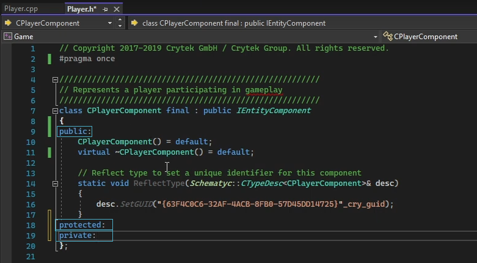
Публичные разделы, protected и private
Начните с добавления
CCameraComponentпод нашимprivateраздел:Cry::DefaultComponents::CCameraComponent* m_pCameraComponent;Вы можете заметить, что после добавления этой строки наш
CCameraComponentподчеркнуто красным. Это потому, что нам нужно добавить соответствующие#includeлинии аВ верхней части заголовка:#include <DefaultComponents/Cameras/CameraComponent.h>Мы выполним следующие шаги для каждого компонента. Далее мы добавим наш
CInputComponentвключив эту строку подprivateраздел:Cry::DefaultComponents::CInputComponent* m_pInputComponent;Теперь добавьте
#includeлиния, соответствующая нашемуCInputComponentвверху:#include <DefaultComponents/Input/InputComponent.h>Далее добавьте
CCharacterControllerComponentлиния:Cry::DefaultComponents::CCharacterControllerComponent* m_pCharacterController;И актуальный
#includeлиния:#include <DefaultComponents/Physics/CharacterControllerComponent.h>Последний компонент, который мы добавим, — это
CAdvancedAnimationComponent:Cry::DefaultComponents::CAdvancedAnimationComponent* m_pAdvancedAnimationComponent;За ним следует последний
#includeлиния:#include <DefaultComponents/Geometry/AdvancedAnimationComponent.h>
Окончательный список добавленных компонентов с соответствующими строками #include.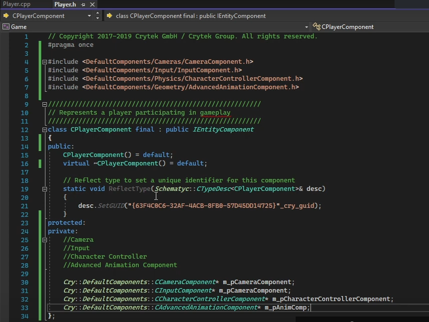
Добавление инициализации к компонентам
Во время игры можно вызывать множество вещей, например «Сброс», «Пробуждение», «GameplayStarted»; внутри нашего IEntityComponent, который является базовым интерфейсом нашего текущего игрока. Мы можем добавить несколько из них, но сначала нам нужно добавить Initialize, который вызывается при самой первой инициализации компонента: время создания во время выполнения игры.
Это Initialize это отличный повод вызвать некоторые компоненты, чтобы они вызывались сразу при загрузке игрока в игру.
яЧтобы использовать этот метод, нам нужно вызвать Инициализировать добавив этот звонок в нашу Player.h:
virtual void Initialize() override;- Поскольку мы его объявили, теперь нам нужно определить его в нашем Player.cpp. Вот что подчеркнуто красной линией эта недавно добавленная строка ускользает. Выделить и щелкните правой кнопкой мыши
Initialize(), выбрать Быстрые действия и рефакторинг, и выберите Создать определение «Инициализировать» в Player.cpp. В фигурных скобках под нашим void
CPlayerComponent::Initialize, добавь это определения для каждого из наших компонентов:m_pCameraComponent = m_pEntity->GetOrCreateComponent<Cry::DefaultComponents::CCameraComponent>(); m_pInputComponent = m_pEntity->GetOrCreateComponent<Cry::DefaultComponents::CInputComponent>(); m_pCharacterController = m_pEntity->GetOrCreateComponent<Cry::DefaultComponents::CCharacterControllerComponent>(); m_pAdvancedAnimationComponent = m_pEntity->GetOrCreateComponent<Cry::DefaultComponents::CAdvancedAnimationComponent>();Теперь, когда мы добавляем наш
CPlayerComponentк сущности в CRYENGINE, к ней будут добавлены все эти компоненты.
Компонент Player — добавление входных данных
Теперь мы добавим наши входы, как клавиатуру, так и мышь, чтобы мы могли смотреть и ходить как игрок. Мы нужно сообщите CRYENGINE, какие клавиши и оси мыши мы хотим использовать и для чего. Позже в уроке мы расскажем CRYENGINE как мы хотим эти вклад в функция и когда их загружать с помощью EventFlags.
Для начала мы можем добавить Зарегистрируйте действия и привяжите действия к нашему добавленному входному компоненту, чтобы мы могли двигаться.
Первый, в нашем Игрок.ч, под
privateраздел, создавать переменная-член:void InitializeInput();Следующий через наш Player.h, также под
privateраздел, мы будем также создавать переменную-член и назовите ее movementDelta:Vec2 m_movementDelta;
- С нашей переменной-членомс определено в нашем заголовке, теперь нам нужно войти в Player.cpp и добавьте оба
InitializeInput()нашемуCPlayerComponent: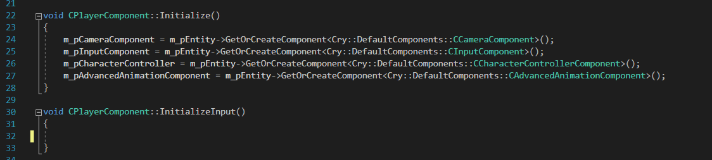
InitializeInput() в CPlayerComponent В течениефигурные скобки в нашем новый
InitializeInput(), мы добавит нашRegisterActionстроку, а для значения в конце добавим наш новый movementaDelta переменная-член. ПолныйRegisterActionлиния:m_pInputComponent->RegisterAction("player", "moveforward", [this](int activationMode, float value) {m_movementDelta.y = value});Теперь, когда у нас есть наш
RegisterAction, нам нужно как-то его назвать: ключ. Это будетBindActionстроку, и мы добавим ее прямо под нашейRegisterAction,который будет назначать Вт key в качестве входных данных для движения вперед:m_pInputComponent->BindAction("player", "moveforward", eAID_KeyboardMouse, eKI_W);Теперь мы хотим повторить этот шаг для остальных ключей, которые мы хотим. рзарегистрироваться и бind, который будет А, Си Д ключи. Для этого вы можете скопировать и вставить заполненную строку ввода..
m_pInputComponent->RegisterAction("player", "moveforward", [this](int activationMode, float value) {m_movementDelta.y = value}); m_pInputComponent->BindAction("player", "moveforward", eAID_KeyboardMouse, eKI_W);Для каждой из клавиш измените название действия и
eKIклавише, которой вы хотите назначить это действие (например, «movebackward» и «eKI_S»).Еще одним важным отличием каждой из этих входных строк является то, что
m_movementDeltaтеперь будетmovementDelta.xилиmovementDelta.yв зависимости от оси, которую мы хотим использовать для назначенного ключа. (Вправо/влево — ось X, вперед/назад — ось Y. Хотя эти изменения будут отражать ось, мы также хотим изменить значение, чтобы указать, в каком конкретном направлении на этой оси каждая клавиша перемещает игрока).Это можно установить, изменив значение на отрицательное. (например, «движение вперед» — это =значение по оси Y, а «движение назад» будет =-значение.)
После добавления всех ключей добавьте
RegisterActionиBindActionлиния для каждой из осей мыши:m_pInputComponent->RegisterAction("player", "yaw", [this](int activationMode, float value) {m_mouseDeltaRotation.y = -value; }); m_pInputComponent->BindAction("player", "yaw", eAID_KeyboardMouse, eKI_MouseY);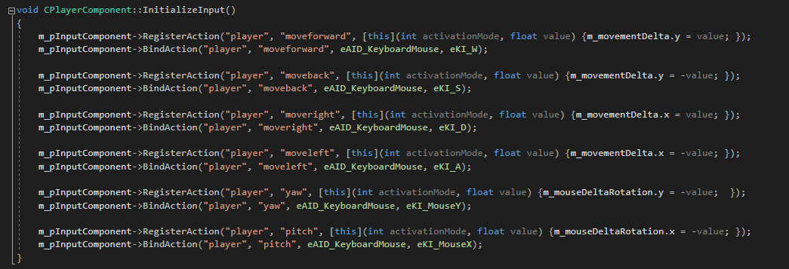
Тон завершает строки ввода для Вт, А, С и Д ключи.
Единственная разница между ними, кроме имен и ввода клавиш, заключается в том, что для значения установлено «-value» или отрицательное значение, поэтому оно обеспечивает противоположное значение m_movementDelta.
Компонент игрока – GetEventMask
После того, как вы введете данные, нам нужно скажи CRYENGINE который События, которые мы хотим использовать повсюду время выполнения игры, а также к чему мы хотели бы их применить. Мы будем использовать GameplayStartedи применив его к нашему CPlayerComponent.
Давайте добавим
publicобъявления методов, которые мы добавим в наш Player.cpp позже. Подpublicраздел Player.h, добавить:virtual Cry::Entity::EventFlags GetEventMask() const override; virtual void ProcessEvent(const SEntityEvent& event) override;
Добавлены строки в раздел public в Player.h.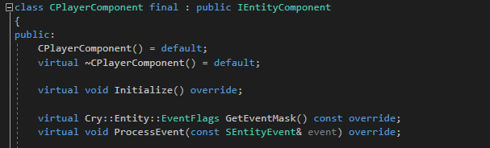
Объявив это, мы теперь можем добавить соответствующие строки в наш Player.cpp. Внутри Player.cpp, тывнизу наш вкладс, создать новую строку и добавить События, которые мы будем использовать:
Cry::Entity::EventFlags CPlayerComponent::GetEventMask() const { return Cry::Entity::EEvent::GameplayStarted | Cry::Entity::EEvent::Update | Cry::Entity::EEvent::Reset; }- Мы пояснили, что хотим использовать следующие события:
GameplayStarted,UpdateReset. До сих пор мы только заявилиGameplayStarted.
Обратите внимание, что события разделяются знаком «|». ключ, а не «:» или «;» ключи, которые вы, возможно, привыкли видеть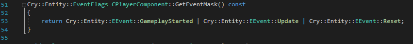
ПодGameplayStartedбудет все, что мы хотим получить в начале игры, в разделеUpdateбудет вызываться все, что мы хотим, многократно и быстро, и подResetмы будем требовать сброса определенных переменных при выходе из игры.
ProcessEvent – GameplayStarted
Теперь, когда мы указали события, обрабатываемые компонентом, мы можем начать определять как мы хотим их реализовать, чтобы придать им цель.
Прежде чем мы добавим что-либо из наших События, которые нам нужно создать а
ProcessEventтак что мы можем указать, какие действия следует выполнить по конкретному событию для этого экземпляра Компонента.. Для этого мы должны cуточните, что мы хотим использоватьCPlayerComponentдля обработки нашего события, добавив следующие строки под масками событий в Player.cpp:void CPlayerComponent::ProcessEvent(const SEntityEvent & event) { switch (event.event) }Затем в рамках нашего
switchоператор, мы можем определить наше первое событие, чтоGameplayStarted. Мы хотим указать ему обрабатывать наш ввод черезInitializeInput(); в начале нашей игры. В нашемswitch, мы будем добавить:{ case Cry::Entity::EEvent::GameplayStarted: { InitializeInput(); } break;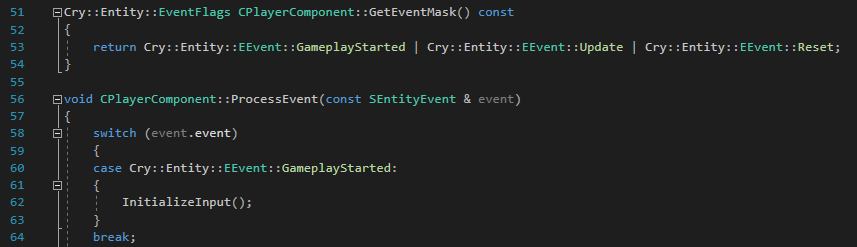
Определение GameplayStartedЭто строки, в которых мы сообщите CRYENGINE, какие события мы будем использовать, а затем добавим это событие и подробную информацию о том, что мы хотим, чтобы оно делало. позвоните нашемуInitializeInput();в началеCPlayerComponent, который находится в начале нашей игры.
Подготовка и доработка Player.h
Прежде чем мы добавим что-либо в наш Update, нам нужно сначала создать члены, которые, как мы ожидаем, будут вызываться внутри него. Такие вещи, как движение игрока, ориентация взгляда, дельта движения и скорость вращения — это лишь некоторые из элементов, которые мы хотим определить.
Update будут конкретные подробности того, как наш игрок перемещается по миру. Хотя мы определили, какие кнопки мы будем нажимать для этого, нам все равно нужно написать код того, что на самом деле происходит, когда мы запускаем эти входные данные. Добавьте полный список участников под
privateраздел в нашем Player.h (имена этих участников могут быть любыми, что соответствует вашим намерениям):void PlayerMovement(); Quat m_lookOrientation; Vec3 m_camerDefaultPos; Vec2 m_movementDelta; Vec2 m_mouseDeltaRotation; float m_movementSpeed; float m_rotationSpeed; float m_rotationLimitsMinPitch; float m_rotationLimitsMaxPitch;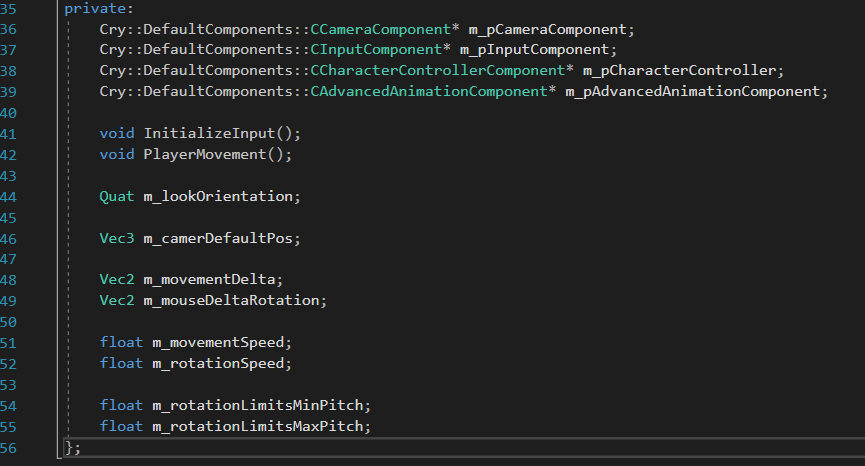
Финал список что добавить в разделе private Player.h
Хотя имена, данные этим участникам, могут подсказать, для чего мы будем их использовать, вы можете заметить, что некоторые из нихQuat, некоторые из нихvoid,Vec2,Vec3иfloat. Эти являются возвращаемыми типами;voidуказывает, что функция не возвращает значение.Quatэто вращение кватернионовVec2представляет собой двумерный вектор.Vec3представляет собой трехмерный вектор.floatопределяет числовые значения с плавающей десятичной точкой.
С нашим
privateраздел обновлен в Player.h, последнее, что нам нужно сделать, этоAddMember. Это добавит наших участников вCPlayerComponent, чтобы мы могли изменять значения непосредственно в CRYENGINE черезСвойства инструмент когда мы добавляем и выбираем нашу сущность игрока. тыподReflectTypeв Player.h, добавьтеAddMemberлиния вместе с именем и краткое описание каждого из участников:desc.AddMember(&CPlayerComponent::m_movementSpeed, 'pms', "playermovespeed", "Player Movement Speed", "Sets the Player Move Speed", ZERO); desc.AddMember(&CPlayerComponent::m_rotationSpeed, 'pros', "playerrotationspeed", "Player Rotation Speed", "Sets the speed of the players rotation", ZERO); desc.AddMember(&CPlayerComponent::m_camerDefaultPos, 'cdp', "cameradefaultpos", "Camera Default Position", "Sets camera default position", ZERO); desc.AddMember(&CPlayerComponent::m_rotationLimitsMaxPitch, 'cpm', "camerapitchmax", "Camera Pitch Max", "Maximum rotation value for camera pitch", 1.5f); desc.AddMember(&CPlayerComponent::m_rotationLimitsMinPitch, 'cpmi', "camerapitchmin", "Camera Pitch Min", "Minimum rotation value for camera pitch", -0.85f);Все участники в этом списке смогут быть изменены непосредственно в CRYENGINE с помощью ввод пользовательские значения в Свойства сущности игрока.
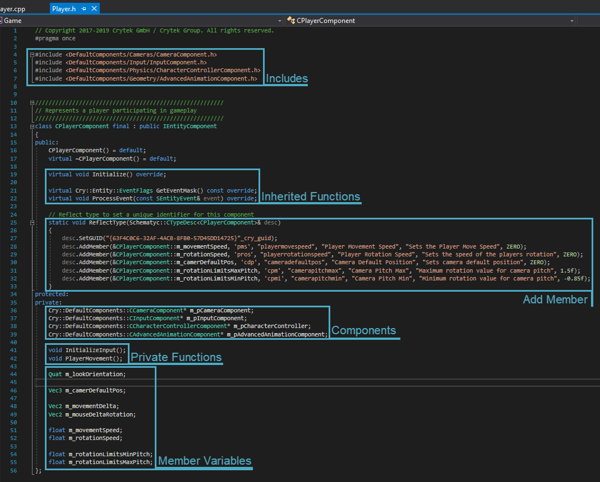
Финал список что добавить в разделе private Player.h
Определение обновления в Player.cpp
Итак далеко мы завершили нашу Player.h, добавил все члены, которых мы собираемся использовать, и указали первое событие для Player.cpp. Теперь, когда мы завершили нашу Player.h и увидели, как мы можем добавлять события, мы добавим два последних Мероприятия для нашего Player.cpp – Update и Reset.
Во-первых, мы хотим добавить регистр и указать что мы хотим, чтобы событие обновлялось. Добавьте следующую строку:
case Cry::Entity::EEvent::Update: { }Внутри
Update, мы хотим добавитьprivateфункция, которая мы намерены использовать. Что-нибудь подUpdateбудет вызываться постоянно на протяжении всей игры, поэтому имеет смысл включить нашPlayerMovementздесь. ВнутриUpdate, добавить:Ang3 rotationAngle = CCamera::CreateAnglesYPR(Matrix33(m_lookOrientation)); rotationAngle.x += m_mouseDeltaRotation.x * m_rotationSpeed; rotationAngle.y = CLAMP(rotationAngle.y + m_mouseDeltaRotation.y * m_rotationSpeed, m_rotationLimitsMinPitch, m_rotationLimitsMaxPitch); rotationAngle.z = 0; m_lookOrientation = Quat(CCamera::CreateOrientationYPR(rotationAngle)); Ang3 yawAngle = CCamera::CreateAnglesYPR(Matrix33(m_lookOrientation)); yawAngle.y = 0; const Quat finalYaw = Quat(CCamera::CreateOrientationYPR(yawAngle)); m_pEntity->SetRotation(finalYaw); Ang3 pitchAngle = CCamera::CreateAnglesYPR(Matrix33(m_lookOrientation)); pitchAngle.x = 0; Matrix34 finalCamMatrix; finalCamMatrix.SetTranslation(m_pCameraComponent->GetTransformMatrix().GetTranslation()); Matrix33 camRotation = CCamera::CreateOrientationYPR(pitchAngle); finalCamMatrix.SetRotation33(camRotation); m_pCameraComponent->SetTransformMatrix(finalCamMatrix);Это легче пониматьd этот блок кода, если вы заметили tшляпа каждый
Ang3есть определяя одну из трёх осей –rotationAngle,yawAngleиpitchAngle.При такой настройке камера будет поворачиваться вверх и вниз при взгляде вверх и вниз по оси тангажа независимо и отдельно от тела игрока, но при взгляде влево и вправо по оси рыскания тело игрока будет вращаться вместе с камерой. Это сделано для того, чтобы тело игрока не двигалось странным образом при взгляде вверх или вниз.
CCameraот плеера только вкл. Это достигается путем создания функций Matrix33 и Matrix34 с именамиcamRotationиfinalCamMatrixи аннулированиеpitchAngle.xиyawAngle.yчтобы0.Обратите внимание, что
CLAMPдобавляется только кrotationAngle.y, поскольку мы хотим зажимать мышь только при взгляде вверх или вниз.
Определение сброса в Player.cpp
Мы добавили GameplayStarted и Update, и теперь нам нужно добавить Reset. Reset это то, что мы хотим сбросить ноль после закрытия игры. Таким образом, члены, которые мы хотим сбросить в этом случае, movementDelta, mouseDeltaRotation и lookOrientation.
Начните с добавления строки дела для
Reset:case Cry::Entity::EEvent::Reset: { }В рамках фигурные скобки, мы можем добавить участников, которых хотим
Resetпосле закрытия игры:m_movementDelta = ZERO; m_mouseDeltaRotation = ZERO; m_lookOrientation = IDENTITY;Вы можете заметить, что для первых двух членов установлено значение «
ZERO» наReset, в то время какlookOrientationустановлено на «IDENTITY”. "IDENTITY"это нулевое вращение по всем осям – что имеет смысл, посколькуlookOrientationQuat, и так на нескольких осях.Далее мы хотим убедиться, что сбросили
camDefaultMatrixвидел вAng3pitchAngle,чтобы камера всегда была сброс.Пропуск этого шага может привести к таким проблемам, как появление и поворот назад.Для этого добавьте соответствующие строки в файл
Reset:Matrix34 camDefaultMatrix; camDefaultMatrix.SetTranslation(m_camerDefaultPos); camDefaultMatrix.SetRotation33(Matrix33(m_pEntity->GetWorldRotation())); m_pCameraComponent->SetTransformMatrix(camDefaultMatrix);- Мы хотим покончить с этим последним корпус с изломом и так наш полный
Resetдолжно выглядеть так: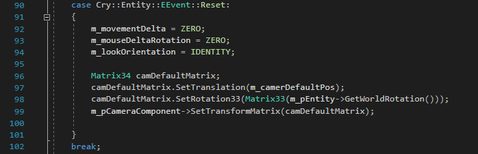
Полный раздел сброса
Завершение движения игрока
Наш последний шаг можно считать недостающее звено, как нам еще предстоит определитье наш игрокидет движение. Для этого мы собираемся призвать PlayerMovement(), private функция, которую мы добавили в нашу Player.h, и определите его с помощью movementDelta и movementSpeed.
Сначала добавьте
PlayerMovementнашемуCPlayerComponentпо добавление строка:void CPlayerComponent::PlayerMovement() { }Внутри тот фигурные скобки из
PlayerMovement(), нам нужно добавитьVec3для нашей скорости, которая будет равна нашей движение добавив:Vec3 velocity = Vec3(m_movementDelta.x, m_movementDelta.y, 0.0f);Далее нам нужно нормализовать движение. В старых играх одновременное нажатие «вперед» и «влево» или «вправо» приводило к увеличению общей скорости бега, поскольку при этом одновременно сочетались оба значения движения. После добавления линии нормализации он будет выполнять векторные математические вычисления для расчета средней скорости при одновременном нажатии двух клавиш движения, что делает невозможным движение быстрее, чем скорость движения, установленная для этих клавиш.
velocity.Normalize();Последняя строка, которую мы добавим
PlayerMovementесть дляm_pCharacterController:m_pCharacterController->SetVelocity(m_pEntity->GetWorldRotation() * velocity * m_movementSpeed);
Последняя строка в PlayerMovement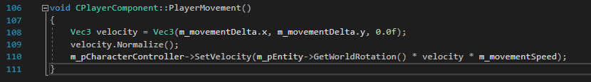
- Чтобы завершить все, нажмите Ctrl + Сдвиг + С сохранить все вкладки и Ctrl + Сдвиг + Б строить законченное решение.
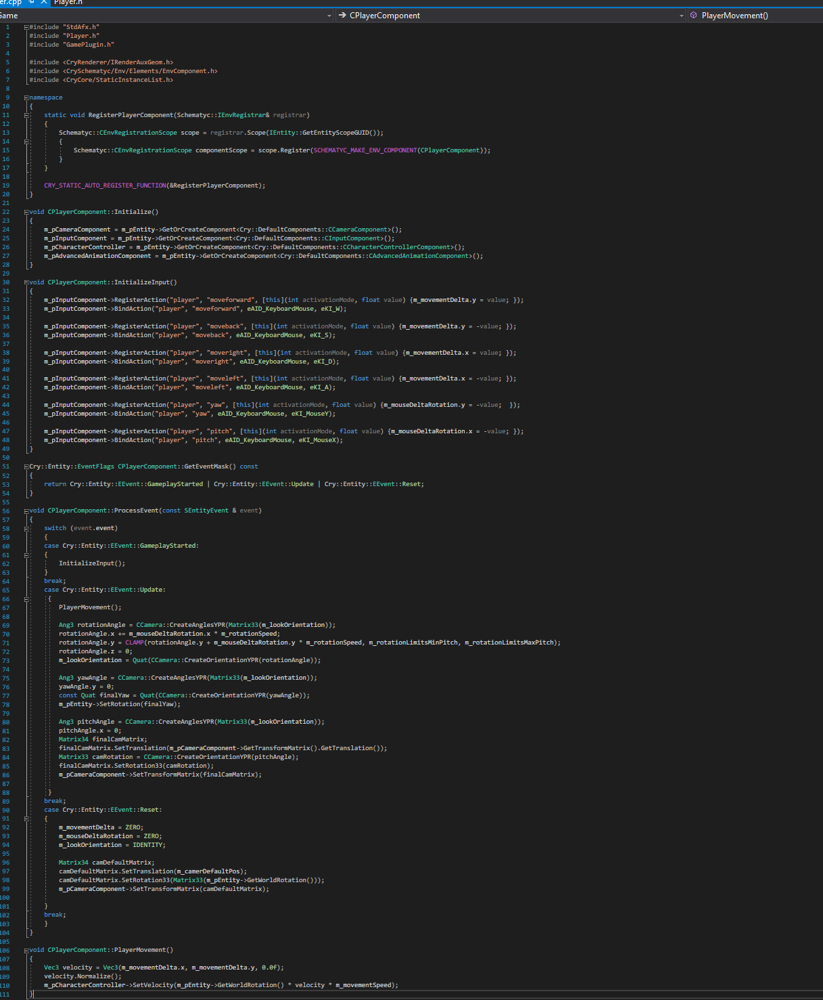
Завершенный раздел «Движение игрока».
Тестирование персонажа
Как только решение будет построено, мы сможем протестировать персонажа в CRYENGINE. Начните с запуска редактора Sandbox непосредственно из Visual Studio:
- По умолчанию, нажав кнопку Локальный отладчик Windows кнопка вверху запустит наш проект в
Исполняемый файл игры пусковая установка . Мы хотим изменить это, чтобы при запуске проекта из Visual Studio он запускался CRYENGINE Sandbox. в режиме редактора. Для этого перейдите в обозреватель решений и щелкните правой кнопкой мыши Редактор → Установить как StartUp Проект.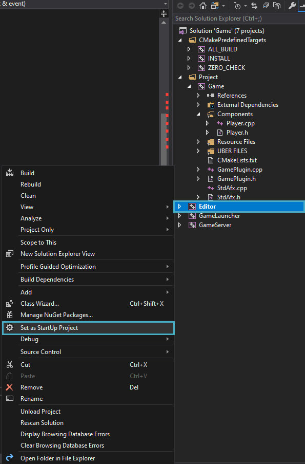
Определение редактора Sandbox в качестве приложения для запуска проекта по умолчанию. - Как только это будет сделано, нажмите Локальный отладчик Windows и запустить проект.
- После открытия уровня перейдите к Создать объект панель и поместите Пустой объект в вашей сцене. Для ясности назовите его примерно так: «Игрок».
- В свойствах этой новой сущности «Игрок» нажмите +Добавить компонент и выберите CPlayerComponent теперь это должно быть доступно.
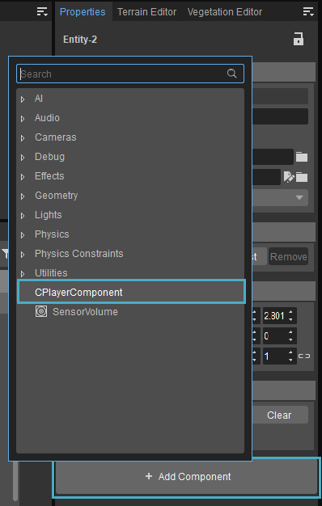
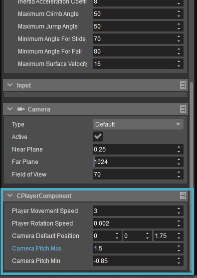
CPlayerComponent Свойства компонента сущности С CPlayerComponent добавлено в наш «ИгрокEntity, теперь вы можете настраивать различные переменные, такие как скорость ходьбы, положение камеры, скорость вращения и т. д.
Рекомендуемые значенияСкорость движения игрока: Значения между 3-5 соответствуют разумной скорости ходьбы.
Скорость вращения игрока: Скорость вращения очень чувствительна, поэтому вам следует установить ее на низкое значение, например 0.002.
Положение камеры по умолчанию: Измените высоту камеры (положение по оси Z), чтобы она соответствовала среднему росту человека. Любое значение между 1.5 и 2 может поместиться этот критерий.
Шаг камеры Макс./Мин.: Установите фиксацию камеры на 1.5 (Макс) и -0.85 (Мин) — эти значения ограничивают, насколько далеко персонаж игрока может наклонить голову назад или вперед.
Когда эти переменные установлены для вашей сущности игрока CPlayerComponent свойства, теперь вы можете нажать Ctrl + Г и протестируйте игру со своим собственным игровым персонажем.
Заключение
На этом урок завершается. Чтобы узнать больше о C++ в CRYENGINE и/или других темах, обратитесь к Руководство CRYENGINE V.
Видеоурок
Вы также можете просмотреть эту серию уроков в видеоформате на нашем канале YouTube:
Сопутствующая информация
Урок. Программирование на C++. Создание контроллера игрока. Летняя академия CRYENGINE.